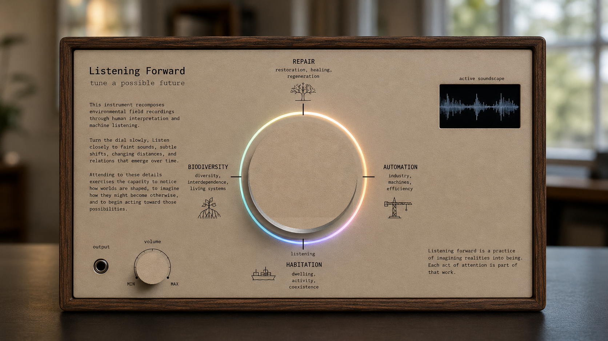

Listening Forward
Tune a possible future.
This instrument recomposes environmental field recordings through human interpretation and machine listening.
Turn the dial slowly. Listen closely to faint sounds, subtle shifts, changing distances, and relations that emerge over time.
Attending to these details exercises the capacity to notice how worlds are shaped, to imagine how they might become otherwise, and to begin acting toward those possibilities.
Listening forward is a practice of imagining realities into being. Each act of attention is part of that work.
Turn the central dial to begin. Move slowly and listen closely to subtle changes.